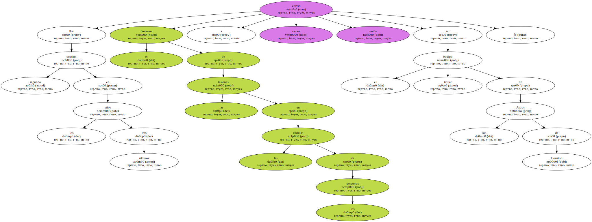
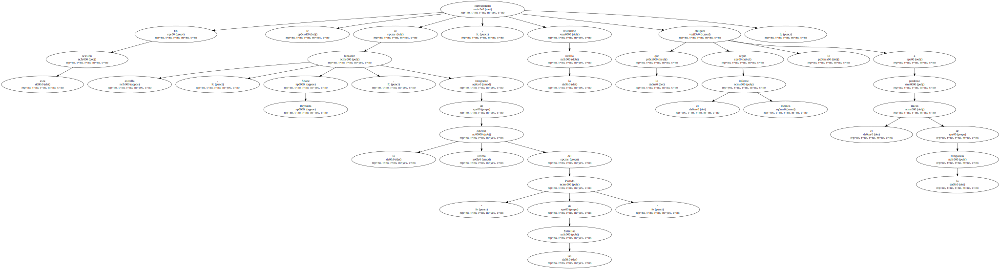
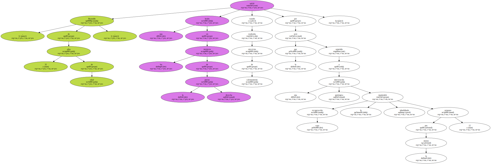
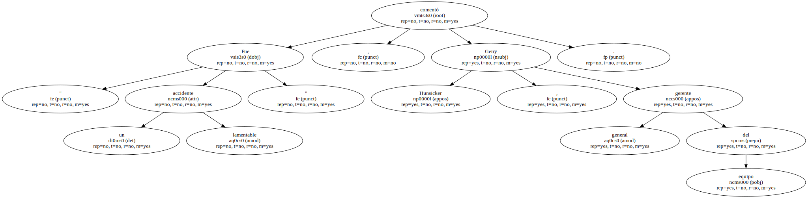
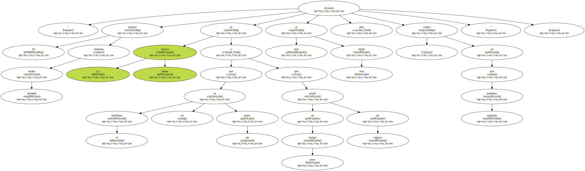
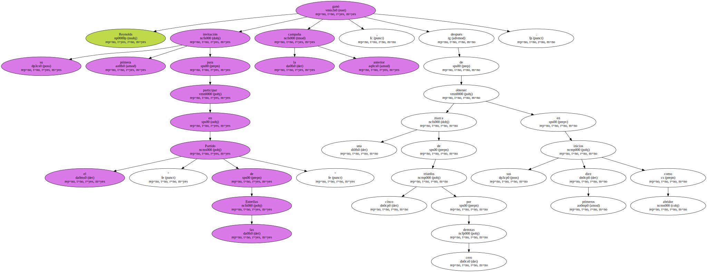
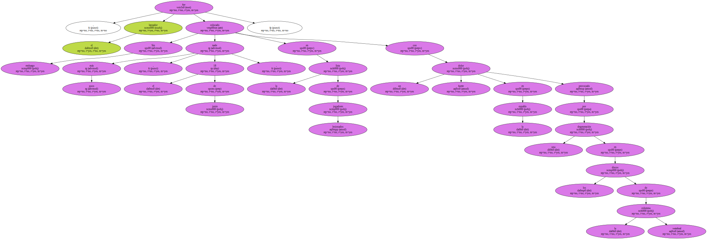
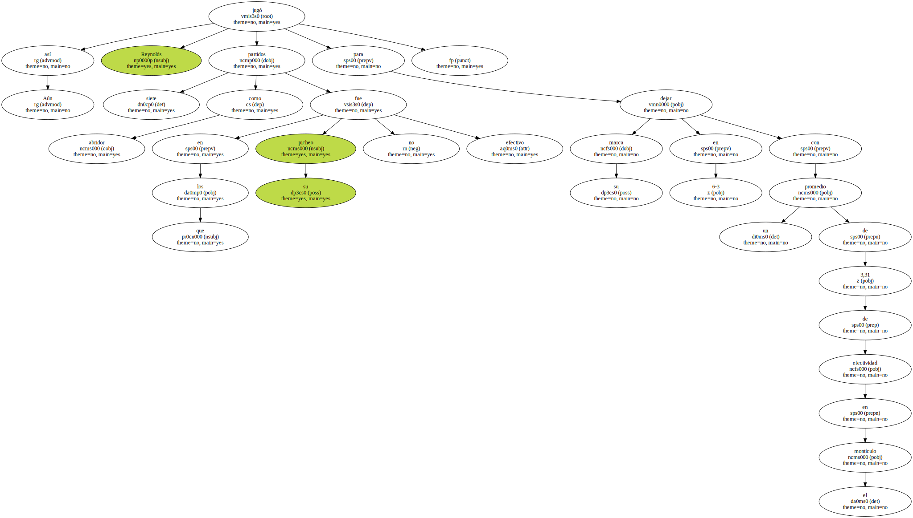
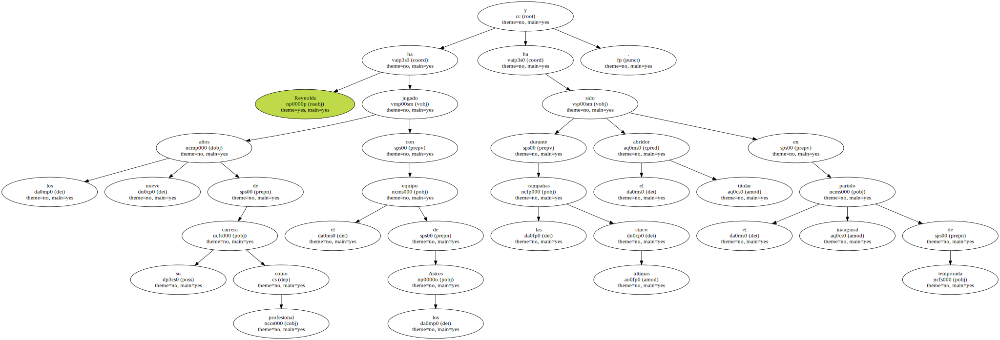
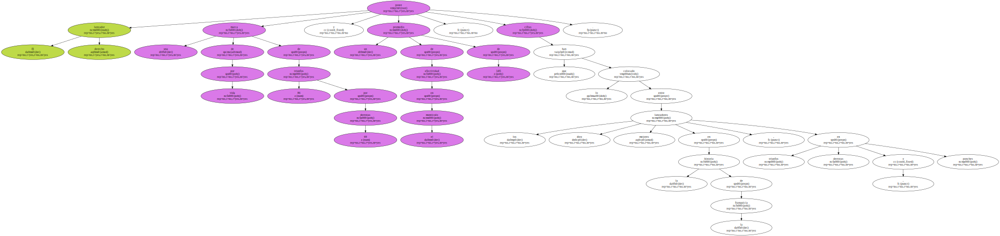

Por segunda ocasión en los últimos tres años el fantasma de las lesiones en las rodillas de los peloteros volvió a causar mella en el equipo titular de los Astros de Houston.
En esta ocasión le correspondió al lanzador estrella , Shane Reynolds , integrante de la última edición del " Partido de las Estrellas " , lesionarse la rodilla lo que según el informe médico lo obligará a perderse el inicio de la temporada.
Reynolds , de 32 años de edad , sufrió una lesión en los meniscos de la pierna derecha cuando realizaba ejercicios de calentamiento por lo que será sometido a una intervención quirúrgica cuya recuperación lo mantendrá inhabilitado por lo menos 12 semanas.
" Fue un lamentable accidente " , comentó Gerry Hunsicker , gerente general del equipo.
" Se lastimó mientras estaba trotando . La buena noticia es que el problema no es tan grave y que en poco tiempo estará de regreso , este es otro bache pero confío en que podamos superarlo ".
A principios de la campaña de 1998 , el equipo de los Astros perdió también uno de sus mejores peloteros , Moises Alou , en ese entonces candidato a convertirse en el " Jugador Más Valioso " de la temporada y jugador también del " Partido de las Estrellas ".

Alou perdió el resto de la temporada cuando al igual que Reynolds sufrió una lesión en la rodilla en los momentos en que trotaba en el diamante.

Reynolds ganó su primera invitación para participar en el " Partido de las Estrellas " la campaña anterior , después de obtener una marca de cinco triunfos por cero derrotas en sus primeros diez inicios como abridor.
Sin embargo , poco más tarde , el 18 de junio , el lanzador fue colocado en la lista de jugadores lesionados con un fuerte dolor en la espalda provocado por una degeneración en los discos de la columna vertebral.
Aún así Reynolds jugó siete partidos como abridor en los que su picheo no fue efectivo para dejar su marca en 6-3 con un promedio de 3,31 de efectividad en el montículo.
Reynolds ha jugado los nueve años de su carrera como profesional con el equipo de los Astros y durante las últimas cinco campañas ha sido el abridor titular en el partido inaugural de temporada.
El lanzador derecho posee una marca de por vida de 86 triunfos por 69 derrotas y un promedio de efectividad en el montículo de 3,85 , cifras que lo han colocado entre los diez mejores lanzadores en la historia de la franquicia , en triunfos , derrotas y ponches.
